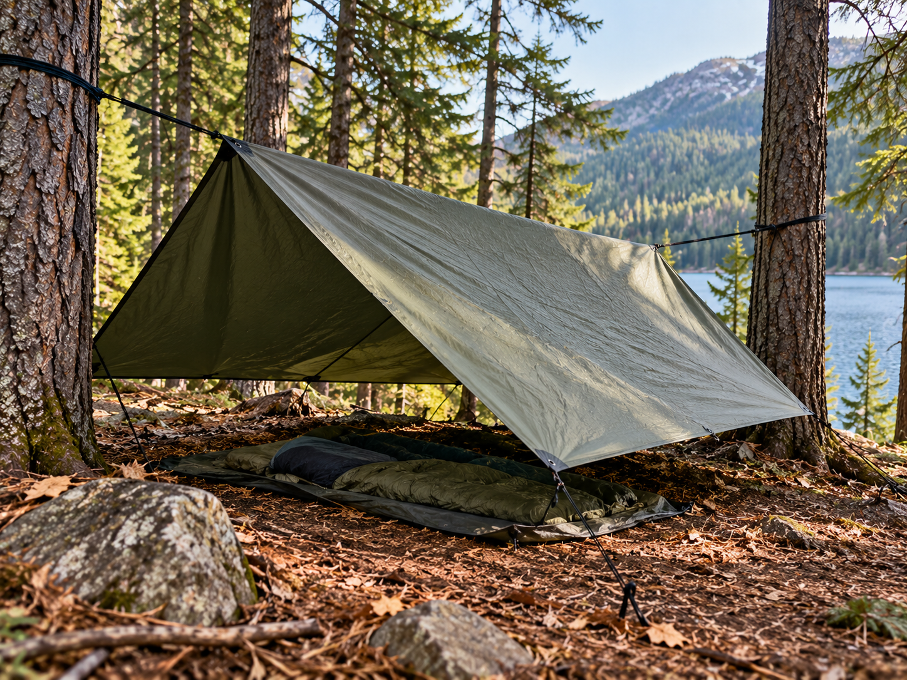

Tarp Shelter

A tarp can be used to create a simple temporary outdoor shelter.
What It Is
A tarp shelter uses a waterproof sheet supported by trees, poles, or other strong anchor points.
When to Use It
It can provide temporary protection from rain, wind, or direct sunlight while outdoors.
How It Works
A tarp is secured above the ground using cord and strong anchor points. It can be angled so rainwater runs away from the sheltered area.
Materials Needed
- Tarp
- Cord or rope
- Trees or poles
- Safe anchor points
Source
Outdoor preparation and shelter information: National Park Service - Ten Essentials